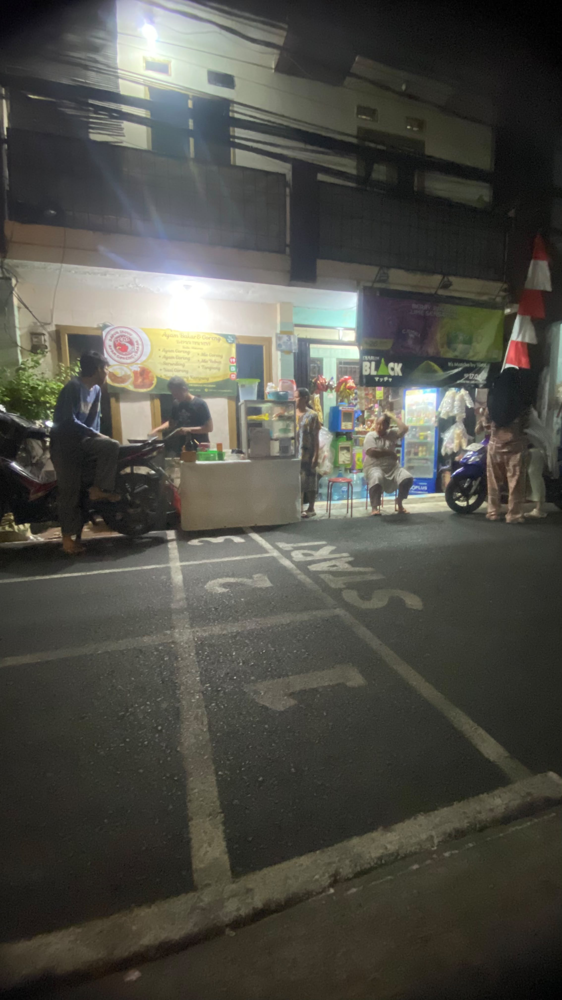

MENU
Menu Dapur Ibu Yeni
Pilihan makanan rumahan yang siap menemani waktu makan Anda.


Menghadirkan masakan rumahan yang lezat, hangat, dan dibuat dengan bahan pilihan untuk menemani setiap momen bersama keluarga.
Mengenal lebih dekat usaha kuliner rumahan Dapur Ibu Yeni.

Dapur Ibu Yeni merupakan usaha mikro kecil dan menengah (UMKM) yang bergerak di bidang kuliner.
Dapur Ibu Yeni menyediakan berbagai makanan bercita rasa rumahan dengan mengutamakan kualitas bahan, kebersihan, rasa, dan pelayanan kepada pelanggan.
Dapur Ibu Yeni
Kuliner / Makanan
Masakan Rumahan
Tunai & QRIS
Menjadi UMKM kuliner pilihan masyarakat dengan menghadirkan makanan rumahan yang berkualitas, lezat, bersih, dan terjangkau.
Menjaga kualitas makanan, menggunakan bahan yang baik, memberikan pelayanan terbaik, serta terus mengembangkan produk dan inovasi.
Dapur Ibu Yeni berawal dari usaha makanan rumahan yang dibuat dengan resep sederhana dan cita rasa keluarga.
Seiring berjalannya waktu, semakin banyak pelanggan yang mengenal dan menikmati masakan Dapur Ibu Yeni.
Produk dan pelayanan terus dikembangkan untuk memenuhi kebutuhan dan selera pelanggan.
Dapur Ibu Yeni mulai memanfaatkan media digital untuk memperkenalkan produk kepada masyarakat secara lebih luas.
Makna dan identitas yang terdapat pada logo Dapur Ibu Yeni.
Logo Dapur Ibu Yeni menggambarkan identitas usaha kuliner rumahan yang mengutamakan kehangatan, rasa, kualitas, dan pelayanan dalam setiap makanan yang disajikan.
Menggambarkan Dapur Ibu Yeni sebagai UMKM yang bergerak di bidang makanan.
Melambangkan suasana masakan rumahan yang dekat dengan keluarga.
Mencerminkan komitmen menjaga kualitas bahan, rasa, dan kebersihan.
Menjadi simbol makanan yang sederhana, familiar, dan membuat pelanggan merasa seperti makan di rumah.
Pilihan makanan rumahan yang siap menemani waktu makan Anda.
Pesan makanan Dapur Ibu Yeni dengan mudah melalui WhatsApp.
Pilih makanan yang ingin dipesan dari daftar menu Dapur Ibu Yeni.
Hubungi Dapur Ibu Yeni melalui WhatsApp untuk melakukan pemesanan.
Pesanan disiapkan sesuai menu dan jumlah yang dipesan.
Pesanan siap diambil atau diantar sesuai kesepakatan dengan pelanggan.


Dokumentasi kegiatan produksi, persiapan, dan pelayanan Dapur Ibu Yeni.

Persiapan bahan sebelum proses memasak.

Proses pengolahan makanan Dapur Ibu Yeni.

Pesanan disiapkan sebelum diberikan kepada pelanggan.

Kegiatan pelayanan dan pemenuhan pesanan pelanggan.
Dapur Ibu Yeni menyediakan pembayaran digital menggunakan QRIS untuk memudahkan pelanggan.

Silakan scan untuk melakukan pembayaran.
Analisis kondisi internal dan eksternal Dapur Ibu Yeni.
Prosedur dasar dalam menjaga kualitas produk dan pelayanan.
Memeriksa kondisi bahan makanan dan memastikan bahan yang digunakan masih baik dan layak.
Membersihkan peralatan, tempat memasak, serta menjaga kebersihan selama proses produksi.
Mengolah makanan sesuai resep dan memperhatikan kematangan serta kualitas rasa.
Makanan disajikan menggunakan wadah yang bersih dan sesuai dengan pesanan pelanggan.
Mencatat pesanan pelanggan dengan benar sebelum makanan diproses.
Memberikan pelayanan yang ramah, cepat, dan bertanggung jawab kepada pelanggan.
"Masakannya enak dan rasanya seperti masakan rumahan. Harganya juga cukup terjangkau."
"Ayam goreng serundengnya enak banget. Bumbunya terasa dan porsinya pas."
"Pelayanannya ramah dan pilihan menunya cukup banyak."
Hubungi kami untuk informasi menu, pemesanan, maupun informasi lainnya.
WhatsApp
+62 812-8437-4705
Alamat
JL. cipinang pulo rt 1 rw 14 no 3 cibesut jatinegara
Jam Operasional
08.00 - 21.00 WIB
Temukan lokasi Dapur Ibu Yeni melalui Google Maps.
📍 Buka Lokasi di Google Maps